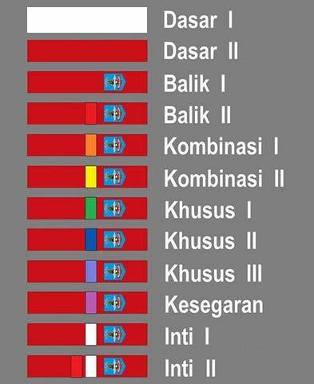

PENDAHULUAN
PPS Betako (Perguruan Pencak Silat Beladiri Tangan Kosong), Merpati Putih merupakan singkatan dari falsafah Jawa MERsudi Patitising Tindak Pusakane Titising Hening, yang kalau diartikan mencapai sampai mendapat kebenaran dengan ketenangan. Merpati Putih berdiri di Yogyakarta, 2 April 1963 dan sekarang sudah memiliki cabang di berbagai negara. MP sebutan populernya berasal dari seni beladiri keluarga keraton, termasuk diantaranya adalah Pangeran Diponegoro yang pada awalnya seni beladiri ini hanya diajarkan kepada KOPASUS dan Pasukan Pengawal Kepresidenan (Paspampres).
LATIHAN MERPATI PUTIH
Tata Gerak, merupakan seni olah tubuh yang terdiri dari berbagai geraka serangan, pukulan, hindaran serta berbagai gerak khas Merpati Putih yang efektif dan efisien dalam mempertahankan diri dan menyerang. Tata gerak melatih anggota untuk dapat bergerak secara luwes namun tetap bertenaga.
Tata perkelahian bebas/fight, mengacu pada aturan IPSI (Ikatan Pencak Silat Indonesia) yang meliputi teknik-teknik perkelahian bebas dengan bentuk serangan tangan, kaki, jatuhan/bantingan,serang-bela dan pola langkah dengan kaidah-kaidah Pencak Silat. Beberapa anggota yang menjadi pesilat nasional dan dunia seperti Joko Suprihatno, Haris Nugroho dan Dian Kristanto (Juara Dunia, Kejuaraan Dunia Pencak Silat 2001).
Tata Nafas, meliputi bentuk Pengolahan dan 4 bentuk Pembinaan, latihan ini melatih tenaga asli manusia. Pada orang biasa, tenaa asli tersebut dapat muncul hanya pada saat rang bersangkutan dalam kondisi terdesak saja. Misal : melompat pagar saat dikejar anjing di jalan yang buntu. Dalam keadaan kembali normal/tidak terdesak, orang tersebut secara tidak percaya telah melompati pagar yang tinggi tersebut. Maka di dalam Pencak Silat ini, bagaimana menggunakan tenaga ekstra asli manusia tersebut pada saat normal kapapun dan dimanapun.
Tujuan dari latihan ini untuk melatih Tenaga murni yan ada di dalam setiap tubuh manusia untuk dapat ditingkatkan dan dipergunakan/diaplikasikan seperluanya, sehingga diharapkan kemampuan/kekuata anggota MP melebihi kekuatan manusia normal, hal ini dapat dibuktikan pada aplikasi pematahan benda-benda keras seperti beton cor, stang pompa dragon, kikir, balok es, batu kali dsb. Dapat dijelaskan secara ilmiah bahwa latihan nafas di Merpati Putih yaitu mengolah ATP (Adenosin Tri Phospat) menjadi ADP (Adenosin Di Phosphat) + Energi yang bersifat explosif, jadi benar-benar mengolah energi tubuh dengan tanpa isian tenaga dalam, tanpa magic/mantra/dupa sehingga bebas dari hal-hal bersifat syirik. Sehingga, terlihat perbedaan Merpati Putih dengan latihan tenaga dalam pada umumnya karena dalam MP yang ada hanyalah tenaga murni.
MP BUKAN SEKEDAR BELADIRI
Beda dengan beladiri lainnya, jika beladiri lain melatih aspek fisik semata (gerakan-gerakan beladiri seperti memukul, mengangkis, jurus dll) dalam Merpati Putih juga dilatih bagian dalam tubuh kita dengan olah nafas, sehingga dikenal nafas pengolahan, pembinaan yang aplikasi latihannya dapat berupa pengobatan, pematahaan benda keras, getaran atau deteksi dan lainnya.
SEJARAH
Merpati putih (MP) merupakan warisan budaya peninggalan nenek moyang Indonesia yang pada awalnya merupakan ilmu keluarga Keraton yang diwariskan secara turun-temurun yang pada akhirnya atas wasiat Sang Guru ilmu Merpati Putih diperkenankan dan disebarluaskan dengan maksud untuk ditumbuhkembangkan agar berguna bagi negara.
Awalnya aliran ini dimiliki oleh Sampeyan Dalem Inkang Sinuhun Kanjeng Susuhunan Pangeran Prabu Amangkurat Ingkang Jumeneng Ing Kartosuro (Sunan Amangkurat I Mataram Islam) kemudian ke BPH Adiwidjojo (Grat I). Lalu setelah Grat ke tiga, R. Ay. Djojoredjoso ilmu yang diturunkan dipecah menurut spesialisasinya sendiri-sendiri, seni beladiri ini mempunyai dua saudara lainnya. yaitu bergelar Gagak Samudro dan Gagak Seto. Gagak Samudro diwariskan ilmu pengobatan, sedangkan Gagak Seto ilmu sastra. Dan untuk seni beladiri diturunkan kepada Gagak Handoko (Grat IV). Dari Gagak Handoko inilah akhirnya turun temurun ke Mas Saring lalu Mas Poeng dan Mas Budi menjadi PPS Betako Merpati Putih. Hingga kini, kedua saudara seperguruan lainnya tersebut tidak pernah diketahui keberadaan ilmunya dan masih tetap dicari hingga saat ini di tiap daerah di tanah air guna menyatukannya kembali.
Pada awalnya ilmu beladiri Pencak Silat ini hanya khusus diajarkan kepada Komando Pasukan Khusus di tiap kesatuan ABRI dan Polisi serta Pasukan Pengawalan Kepresidenan (Paspampres).
Didirikan pada tanggal 2 April 1963 di Yogyakarta, mempunyai kurang lebih 85 cabang dalam negeri dan 4 cabang luar negeri dengan jumlah kolat (kelompok latihan) sebanyak 415 buah (menurut data tahun 1993[butuh rujukan]) yang tersebar di seluruh Nusantara dan saat ini mempunyai anggota sebanyak kurang lebih dua setengah juta orang lulusan serta yang masih aktif sekitar 100 ribu orang dan tersebar di seluruh Indonesia.
Sang Guru Merpati Putih adalah Bapak Saring Hadi Poernomo, sedangkan pendiri Perguruan dan Guru Besar sekaligus pewaris ilmu adalah Purwoto Hadi Purnomo (Mas Poeng) dan Budi Santoso Hadi Purnomo (Mas Budi) sebagai Guru Besar terakhir yaitu generasi ke sebelas (Grat XI).
PPS Betako Merpati Putih berasal dari seni beladiri keraton. Termasuk di antaranya adalah Pangeran Diponegoro.
Berikut Silsilah Turunan aliran PPS Betako Merpati Putih:
- BPH ADIWIDJOJO: Grat-I
- PH SINGOSARI: Grat-II
- R Ay DJOJOREDJOSO: Grat-III
- GAGAK HANDOKO: Grat-IV
- RM REKSO WIDJOJO: Grat-V
- R BONGSO DJOJO: Grat-VI
- DJO PREMONO: Grat-VII
- RM WONGSO DJOJO: Grat-VIII
- KROMO MENGGOLO: Grat-IX
- SARING HADI POERNOMO: Grat-X
- POERWOTO HADI POERNOMO dan BUDI SANTOSO HADI POERNOMO: Grat-XI
- Pewaris muda: NEHEMIA BUDI SETIAWAN (putra Mas Budi) dan AMOS PRIONO TRI NUGROHO (putra Mas Poeng)
Amanat Sang Guru, seorang Anggota Merpati putih haruslah mengemban amanat Sang Guru yaitu:
- Memiliki rasa jujur dan welas asih
- Percaya pada diri sendiri
- Keserasian dan keselarasan dalam penampilan sehari-hari
- Menghayati dan mengamalkan sikap itu agar menimbulkan Ketaqwaan kepada Tuhan.
SABUK
- Tingkat Dasar I, tingkatan pertama masih berstatus calon anggota, walaupun telah berseragam baju atau kaos berwarna putih, celana hitam, kerah baju merah dengan label nama diri di dada namun sabuk masih putih polos.
- Tingkat Dasar II, tingkatan kedua dan seterusnya telah memakai seragam anggota tanpa nama diri dengan lambang IPSI dan lambang Merpati Putih di dada serta bersabuk merah polos.
- Tingkat Balik I, sabuk merah (tanpa strip) dengan lambang Merpati Putih di salah satu ujungnya.
- Tingkat Balik II, sabuk merah dengan lambang Merpati Putih dan berstrip merah di salah satu ujungnya.
- Tingkat Kombinasi I, sabuk merah dengan lambang Merpati Putih dan berstrip jingga di salah satu ujungnya.
- Tingkat Kombinasi II, sabuk merah dengan lambang Merpati Putih dan berstrip kuning di salah satu ujungnya.
- Tingkat Khusus I (Khusus Tangan), sabuk merah dengan lambang Merpati Putih dan berstrip hijau di salah satu ujungnya.
- Tingkat Khusus II (Khusus Kaki), sabuk merah dengan lambang Merpati Putih dan berstrip biru di salah satu ujungnya.
- Tingkat Khusus III (Khusus Badan), sabuk merah dengan lambang Merpati Putih dan berstrip nila di salah satu ujungnya.
- Tingkat Kesegaran, sabuk merah dengan lambang Merpati Putih dan berstrip ungu di salah satu ujungnya.
- Tingkat Inti I, sabuk merah dengan lambang Merpati Putih dan berstrip putih di salah satu ujungnya.
- Tingkat Inti II, sabuk merah dengan lambang Merpati Putih dan berstrip merah dan putih di salah satu ujungnya.